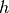
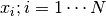
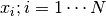
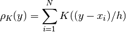
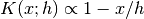

2.12. 密度估计
密度估计在无监督学习，特征工程和数据建模之间划分了界线。一些最流行和最有用的密度估计方法是混合模型，如高斯混合( sklearn.mixture.GaussianMixture ), 和基于邻近的方法( sklearn.neighbors.KernelDensity )，如核密度估计。 clustering 一节中更充分地讨论了高斯混合，因为此方法也用作为一种无监督聚类方案。
密度估计是一个非常简单的概念，大多数人已经熟悉了其中一种常用的密度估计技术：直方图。
2.12.1. 密度估计: 直方图
直方图是一种简单的数据可视化方法，其中定义了组( bins )，并且统计了每个组( bin )中的数据点的数量。在下图的左上角中可以看到一个直方图的例子:

然而，直方图的一个主要问题是组( binning )的选择可能会对得到的可视化结果造成不相称的影响。考虑上图中右上角的图, 它显示了相同数据下组( bins )向右移动后的直方图。这两个可视化的结果看起来完全不同，可能会导致对数据作出不同的解释。
直观地说，你也可以把一个直方图看成由一堆块组成，每个点上放一个块，通过在合适的网格空间中堆积这些块，我们就可以得到直方图。但是，如果不是把这些块堆叠在一个规则的网格上，而是把每个块的中心定位在它所代表的点上，然后把每个位置的总高度相加呢?这样可以得到如上图左 下角所示的可视化.它可能不像直方图那样整洁，但是由数据决定块的位置意味着它能更好地表示基本的数据。
这个可视化是核密度估计的一个例子，该例中用的是一种”顶帽”核（即每个点上的方块）。我们可以通过使用一种更平滑的核来得到一个更平滑的分布。上图右下角展示了一个高斯核密度估计，其中每个点都给总的分布贡献一条高斯曲线。结果是从数据中得到了一个平滑的密度估计，并且可作为一个强大的非参数模型用来估计这些点的分布。
2.12.2. 核密度估计
sklearn.neighbors.KernelDensity 实现了 scikit-learn 中的核密度估计，它使用 Ball Tree 或 KD Tree 来进行高效查询（有关这些讨论请参见 最近邻 ）。尽管为了简单起见上述示例采用的是一维数据集，但实际上核密度估计能够用在任意维度上, 不过在实际应用中,维数灾难会导致其在高维上的性能降低。
如下图所示, 从双峰分布中绘制了100个点，并展示了选用三个不同核的核密度估计:

图中可以很明显地看到核的形状如何影响结果分布的平滑度. 使用 scikit-learn 核密度估计的方法如下所示：
>>> from sklearn.neighbors.kde import KernelDensity
>>> import numpy as np
>>> X = np.array([[-1, -1], [-2, -1], [-3, -2], [1, 1], [2, 1], [3, 2]])
>>> kde = KernelDensity(kernel='gaussian', bandwidth=0.2).fit(X)
>>> kde.score_samples(X)
array([-0.41075698, -0.41075698, -0.41076071, -0.41075698, -0.41075698,
-0.41076071])
如上所示,这里我们选用的是高斯核 kernel='gaussian' .在数学上，核是由带宽参数  控制的正值函数  . 给定核的形状后,在一组点  内的
. 给定核的形状后,在一组点  内的  点处的密度估计由下式给出:
点处的密度估计由下式给出:

这里的带宽作为平滑参数，用来平衡结果中偏差和方差的值。 大的带宽会导致非常平滑（即高偏差）密度分布,而小的带宽则导致不平滑（即高方差）密度分布。
sklearn.neighbors.KernelDensity 实现了一些常见形状的核, 如下图所示:

这些核的形式如下所示:
Gaussian kernel (
kernel = 'gaussian')
Tophat kernel (
kernel = 'tophat') if
if 
Epanechnikov kernel (
kernel = 'epanechnikov')
Exponential kernel (
kernel = 'exponential')
Linear kernel (
kernel = 'linear') if
Cosine kernel (
kernel = 'cosine') 如果
如果
核密度估计可以与任何有效的距离度量一起使用（可用度量列表请参见 sklearn.neighbors.DistanceMetric ）， 但其结果被适当地归一化处理,仅适用于欧几里德度量标准。 一个特别有用的度量是测量球体上的点与点之间角距离 的 Haversine distance 。 下面是使用核密度估计来对地理空间数据进行可视化的示例，本例中南美大陆两种不同物种的观测分布如图:

核密度估计的另一个有用的应用是从数据集中学习出一个非参数生成模型，以便有效地从该生成模型中绘制新的样本。 以下是使用此过程创建一组新的手写数字的示例，使用的是高斯核对数据的 PCA 投影进行学习：

“新”数据由输入数据线性组合而成，其权重根据 KDE 模型按概率给出。
示例:
- Simple 1D Kernel Density Estimation: 一维简单核密度估计的计算。
- Kernel Density Estimation: 使用核密度估计来学习手写数字数据生成模型，以及使用该模型绘制新样本的示例
- Kernel Density Estimate of Species Distributions: 使用Haversine距离度量来显示地理空间数据的核密度估计示例.